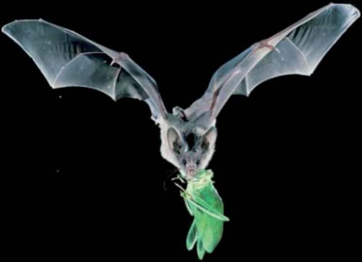
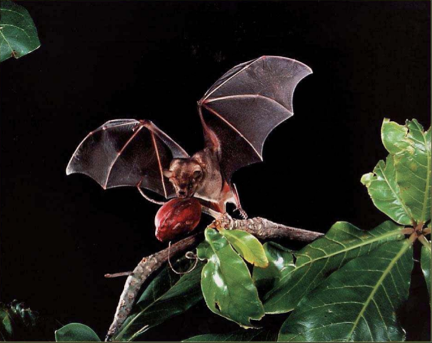
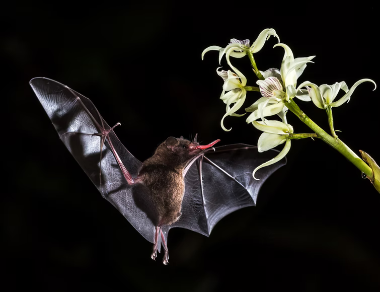
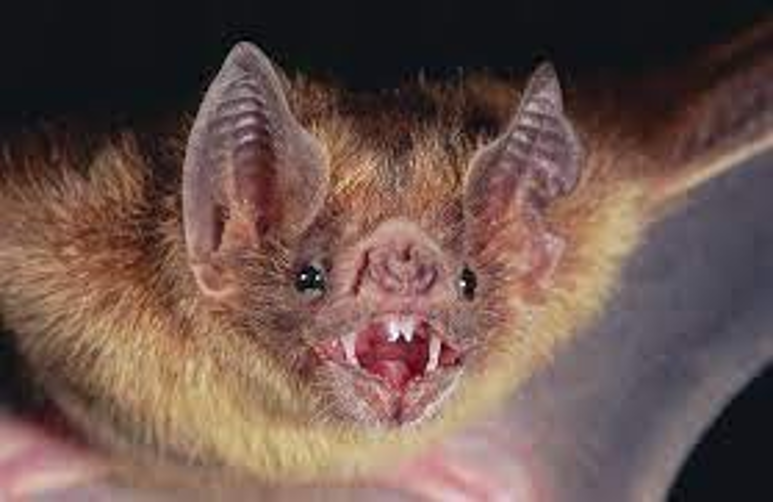
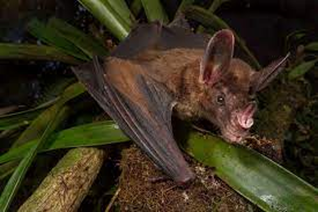

Insectívoro
Aproximadamente tres cuartas partes de todos los murciélagos en el mundo son insectívoros, lo que significa que se alimentan de insectos como grillos, moscas, polillas, moquitos, cucharachas, etc. Una adaptación que presentan ciertas especies de murciélagos insectívoros es el uropatagio que les sirve como un tipo de red para atrapar a su presa.

Frugívoro
Se alimentan de frutos de distintas plantas, y tienen dientes muy fuertes para sostener su alimento en el vuelo, después cortar la fruta y comérsela en un árbol, ¡boca abajo!

Nectarívoro
Se alimentan del polen y del néctar de las flores. Comúnmente tienen lenguas y hocicos alargados para poder alcanzar el néctar que está hasta el fondo de las flores. De esta manera, logran alimentarse y llenar sus peludos cuerpos de polen que transportarán hacia otras flores.
Nectarívoro
Se alimentan del polen y del néctar de las flores. Comúnmente tienen lenguas y hocicos alargados para poder alcanzar el néctar que está hasta el fondo de las flores. De esta manera, logran alimentarse y llenar sus peludos cuerpos de polen que transportarán hacia otras flores.

Hematófago
Solo son tres especies de las 1400 que hay en el mundo. Se alimentan de sangre de aves y
mamíferos, y generalmente solo necesitan 20 ml. Las presas son localizadas por el olor,
sonido y posiblemente por termoreceptores. En general se aproximan desde el suelo, siendo
muy ágiles saltando.
Realizan un pequeño corte con los incisivos en una zona irrigada de la presa y la sangre
fluye debido a un anticoagulante que contiene su saliva; luego lamen la sangre pudiendo
consumir casi su peso en media hora.
